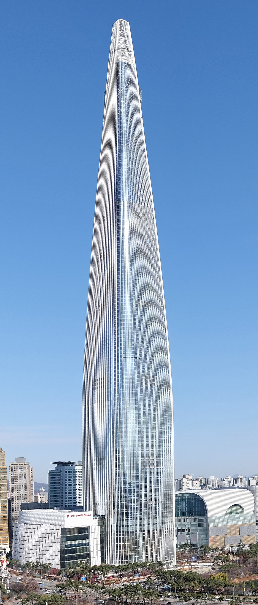
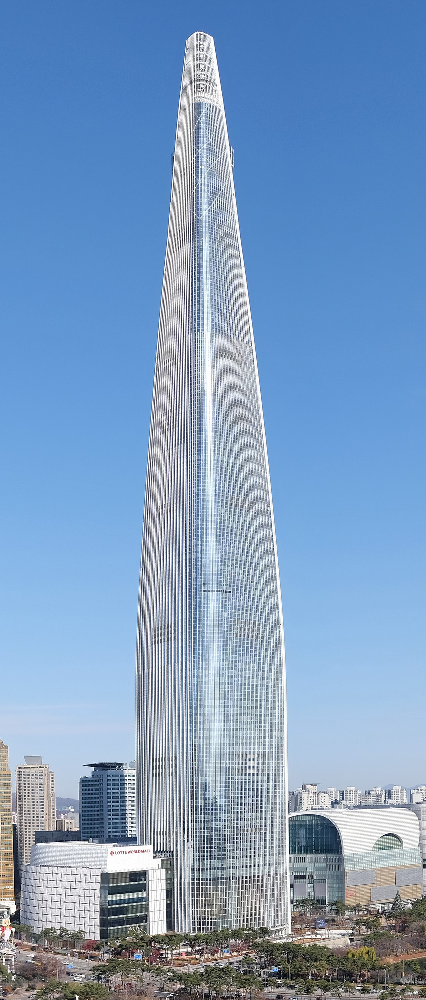

Witam
Na tej witrynie przedstawie najwyższe budynki świata
Najwyższe Budynki
- Burj Khalifa – Dubaj, 828 m
- Shanghai Tower – Szanghaj, 632 m
- Abraj Al-Bait – Mekka, 601 m
- Ping An Finance Center – Shenzhen, 599 m
- Lotte World Tower – Seul, 555 m
Źródła
https://pl.wikipedia.org/wiki/Lista_najwy%C5%BCszych_budynk%C3%B3w
https://pl.wikipedia.org/wiki/Burd%C5%BC_Chalifa
https://pl.wikipedia.org/wiki/Lista_najwy%C5%BCszych_budynk%C3%B3whttps://en.wikipedia.org/wiki/Shanghai_Tower
https://pl.wikipedia.org/wiki/Abrad%C5%BC_al-Bajt
https://en.wikipedia.org/wiki/Ping_An_Finance_Centre
https://en.wikipedia.org/wiki/Lotte_World_Tower
https://en.wikipedia.org/wiki/Guangzhou_CTF_Finance_Centre
https://pl.wikipedia.org/wiki/Burd%C5%BC_Chalifa
https://pl.wikipedia.org/wiki/Lista_najwy%C5%BCszych_budynk%C3%B3whttps://en.wikipedia.org/wiki/Shanghai_Tower
https://pl.wikipedia.org/wiki/Abrad%C5%BC_al-Bajt
https://en.wikipedia.org/wiki/Ping_An_Finance_Centre
https://en.wikipedia.org/wiki/Lotte_World_Tower
https://en.wikipedia.org/wiki/Guangzhou_CTF_Finance_Centre
Galeria

 
